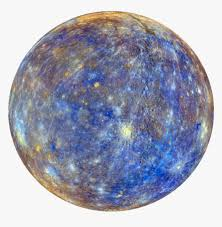
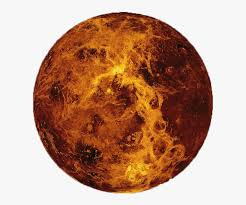
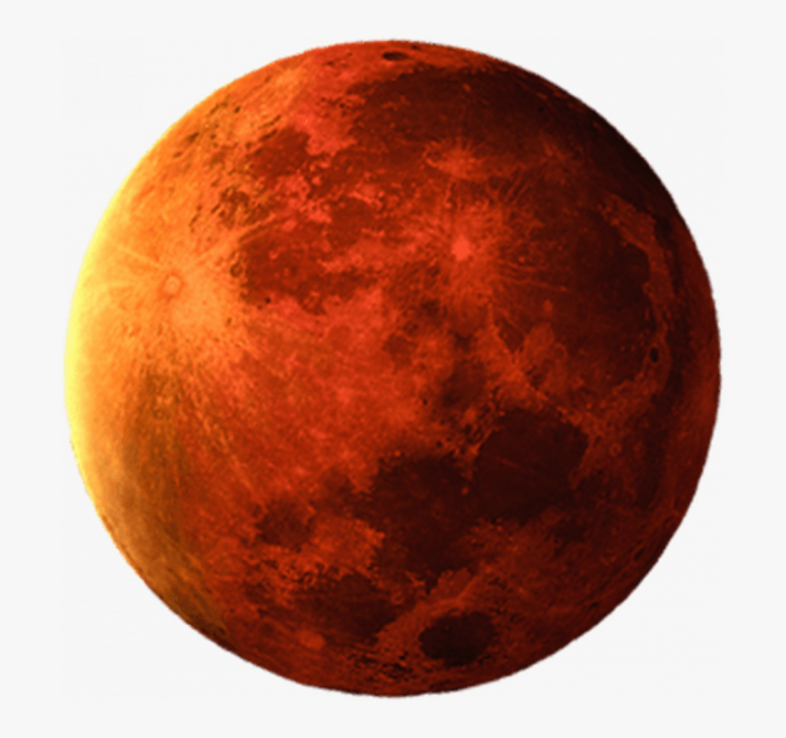
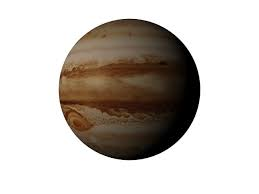
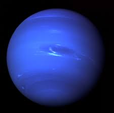
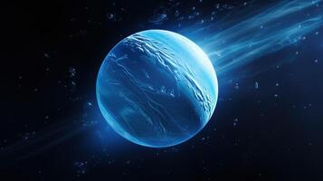

The Sun is the star at the center of the solar system. It is a hot ball of gases that gives off great amounts of energy. Life on Earth depends on the light and heat from the Sun.
The Sun is the largest object by far in the solar system. Its diameter, or distance through its center, is about 865,000 miles (1,392,000 kilometers). This is about 109 times bigger than Earth's diameter.

MERCURY
Mercury is the smallest planet in our solar system. It's just a little bigger than Earth's Moon. Mercury itself, though, doesn't have any moons. It is the closest planet to the Sun, but its actually not the hottest. Venus is hotter.
Along with Venus, Earth, and Mars, Mercury is one of the rocky planets. It has a solid surface that is covered with craters. Instead of an atmosphere, Mercury possesses a thin exosphere made up of atoms blasted off the surface by the solar wind and striking meteoroids. Mercury's exosphere is composed mostly of oxygen, sodium, hydrogen, helium, and potassium. Mercury doesn’t have any moons.

VENUS
The second planet from the Sun is Venus. After the Moon, Venus is the most brilliant natural object in the nighttime sky. It is the closest planet to Earth, and it is also the most similar to Earth in size, mass, volume, and density. These similarities suggest that the two planets may have had similar histories. Scientists are thus intrigued by the question of why Venus and Earth are now so different.
Venus was named after the ancient Roman goddess of love and beauty, but its conditions are anything but hospitable and inviting to humans. Unlike Earth, Venus is extremely hot and dry. The planet is always shrouded by a thick layer of clouds. Venus has a massive atmosphere, or surrounding layers of gases, composed mainly of carbon dioxide. This thick atmosphere traps heat, making Venus the hottest planet in the solar system.
EARTH
The planet we live on is a lot like other planets. It is a round body that spins around in space and travels around the Sun. It has an atmosphere made up of different gases. It is a rocky planet, like Mercury, Venus, and Mars. But there is one big difference between Earth and all the other planets—Earth is the only planet in the solar system that can support life. Life on Earth exists because the planet has water on its surface and oxygen gas in its air. Earth also has the perfect range of temperatures for life. It is not too hot, like Venus, and not too cold, like Neptune. The average temperature on Earth is about 59 °F (15 °C).
Every planet in the solar system is named after a god or goddess from Greek or Roman mythology except for Earth. Earth means “the ground” in Old English and German.
Physical Features
Size: 7,926 miles (12,756 kilometers) in diameter.
Surface: Water and land. Water covers about 70 percent of Earth’s surface. This water is in the form of oceans, rivers, and lakes. Land covers about 30 percent of Earth’s surface. The land is divided into seven huge pieces called continents. Structure :Earth is made up of three layers: the core, the mantle, and the crust. The core is the center of the planet. The core is very hot. The mantle covers the core. The crust is Earth’s thin, rocky outer layer. Plants, animals, and people live on the crust. Atmosphere: Mostly water vapor and the gases nitrogen and oxygen. This is the air that living things breathe. Earth’s atmosphere goes up to a few hundred miles above the surface. The atmosphere gets thinner as it gets farther from the surface. Moons: One—the Moon.

MARS
Mars is the fourth planet from the Sun, in our solar system, our Earth is the third. It is also referred to as the red planet since from Earth the surface of the planets occurs red in colour. It has a rocky, dusty, and thin atmosphere. The planet has been under a lot of study by the scientists on Earth because it is considered as the next destination where humans can survive other than the Earth itself. In this article, we will look at the reason why out of the seven other planets, Mars is considered fit for Human Inhabitation and also discuss some fun and interesting facts about the Red Planet.
Mars has two natural satellites also known as moons which orbit around it in fixed orbits. These two moons are Phobos and Deimos.
Deimos is the smaller moon out of the two and is present on the outer side whereas Phobos is the innermost and the larger one of the two natural satellites.

JUPITER
Jupiter is the fifth closest planet to the sun, and it does not have any solid surface. Jupiter is made up of two gases, hydrogen and helium and is the giant planet in the solar system. It is the giant ball of gas in our solar system along with Saturn, Uranus and Neptune.
Jupiter is so far from the sun that it takes more than 10 Earth years for it to travel around once. Although Jupiter's orbit is much longer than the earth's, its day is much shorter.
Jupiter rotates once every 9 hours, much faster than the earth, which rotates once every 24 hours. Also, the rotation of Jupiter is faster than any other planet in the solar system.
The spinning of Jupiter so quickly causes strong weather patterns in the clouds surrounding the planet. This makes Jupiter the stormiest planet in the universe.
Jupiter has at least 67 moons. Fifty-five of these moons are very small- only a few miles or kilometres wide.
SATURN
Saturn is the sixth planet from the Sun. It was the farthest planet people from ancient times knew. Uranus and Neptune—the two farthest planets—were not discovered until much later. Saturn was named after the Roman god of agriculture. Size: 74,900 miles (120,600 kilometers) in diameter. Saturn is much bigger than Earth. To compare the two planets, Earth would be the size of a dime, and Saturn would be the size of a soccer ball. Gases: Mainly hydrogen and helium. What looks like a solid surface in photographs is actually a layer of clouds. Under Saturn’s huge layers of gases is a smaller area of hot liquid metal. At its center, the planet probably has a hot, rocky core. Rings:Thin rings made up mostly of ice and rocks. There are seven rings, A–G. The ring system extends up to 175,000 miles (280,000 kilometers) out from the planet. The main rings (A, B, and C) are about 30 feet (9 meters) thick. Moons: More than 140 moons. Saturn has 8 major moons and many small ones. Its largest moon is Titan. Titan’s atmosphere, or the layer of gases surrounding it, is very thick. Titan is the only moon in the solar system known to have a thick atmosphere and clouds.

URANUS
Uranus is the seventh planet from the Sun. It was named after the Greek god of the sky. The planet Uranus, along with Neptune, Saturn, and Jupiter, are called gas giants. They are huge and made up mostly of gases. They do not have a solid surface. Size: 32,000 miles (51,000 kilometers). Uranus is the third largest planet in the solar system. About 63 Earths could fit inside Uranus. Gases: Mainly hydrogen and helium. Small amounts of the gas methane give Uranus a blue-green color. Underneath its huge layers of gases, the planet has a smaller area of thick, hot liquid. Rings: Thin, narrow rings made of ice and rocks. The rings that surround Uranus are very dark. They reflect about as much light as charcoal. Moons: More than 25 moons. Its 5 major moons are Oberon, Titania, Ariel, Umbriel, and Miranda. They seem to be composed of ice and rock. Some of them have deep valleys and many large pits called craters.

NEPTUNE
The eighth and farthest planet from the Sun is Neptune. It is always more than 2.5 billion miles (4 billion kilometers) from Earth, making it too far to be seen with the unaided eye. It was the second planet, after Uranus, to be discovered through a telescope but the first planet to be found by people specifically searching for one. In the mid-1800s several astronomers began looking for a planet beyond Uranus, in part because Uranus did not move along its orbit exactly as expected. Scientists thought that these slight differences could be caused by the gravitational pull of another planet, and they were right. Several people can be credited with Neptune’s discovery. John Couch Adams and Urbain-Jean-Joseph Le Verrier independently calculated the planet’s probable location, while in 1846 Johann Gottfried Galle and his assistant Heinrich Louis d’Arrest were the first to identify it in the night sky. The new planet was named Neptune after the ancient Roman god of the sea.